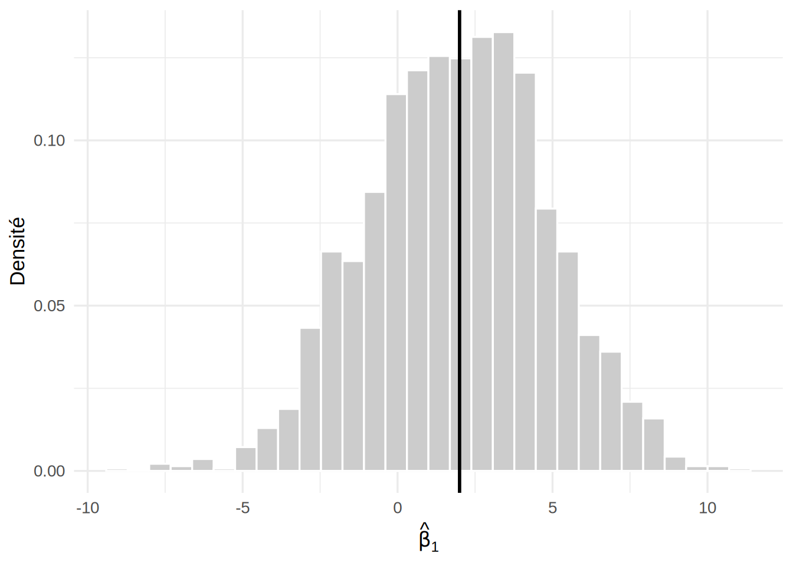

library(ggplot2)1 Simulations de Monte Carlo
Ce chapitre utilise les librairies R suivantes.
Ce chapitre présente la simulation de Monte Carlo. Il s’agit de fabriquer des jeux de données dont le vrai modèle est connu, d’y appliquer la méthode étudiée, puis de regarder ce qu’elle fait sur un grand nombre de répétitions. Cet outil est nécessaire parce que plusieurs résultats de ce livre ne sont connus que de façon asymptotique. C’est le cas de la loi de \(\hb\) dans un modèle linéaire généralisé (GLM, Chapitre 3), de la validité des intervalles de Wald et du niveau d’un test du rapport de vraisemblance. Ces résultats disent ce qui se passe quand \(n \to \infty\), mais pas si l’approximation est bonne pour le \(n\) dont on dispose.
J’illustre d’abord l’outil sur le modèle linéaire, où les résultats exacts sont connus, ce qui permet de vérifier que la simulation fonctionne. On s’en servira ensuite en régression logistique (Chapitre 2).
1.1 Principe
On cherche une quantité de la forme \(\theta = E[g(\boldsymbol Y)]\), où \(\boldsymbol Y\) est un jeu de données généré par un modèle entièrement spécifié. La fonction \(g\) s’applique à ce jeu de données : un estimateur, l’indicatrice qu’un intervalle contient la vraie valeur, l’indicatrice qu’un test rejette \(H_0\), etc. Cette espérance est rarement calculable explicitement.
Définition — Simulation de Monte Carlo
On génère \(B\) jeux de données indépendants \(\boldsymbol Y^{(1)},\ldots,\boldsymbol Y^{(B)}\) à partir du modèle spécifié, puis on estime \(\theta\) par la moyenne
\[ \hat\theta_B = \frac{1}{B}\sum_{b=1}^{B} g\left(\boldsymbol Y^{(b)}\right). \]
Si \(E|g(\boldsymbol Y)|<\infty\), la loi des grands nombres donne \(\hat\theta_B \to \theta\) quand \(B \to \infty\).
Il ne faut pas voir \(\hat\theta_B\) comme la valeur exacte de \(\theta\). Comme \(\hat\theta_B\) est lui-même aléatoire, il comporte une erreur, appelée erreur de Monte Carlo.
Propriété — Erreur de Monte Carlo
L’estimateur \(\hat\theta_B\) est sans biais pour \(\theta\) et, si \(Var[g(\boldsymbol Y)]<\infty\),
\[ Var\left[\hat\theta_B\right] = \frac{Var\left[g(\boldsymbol Y)\right]}{B}. \]
Quand \(g\) est une indicatrice, \(\theta\) est une probabilité (par exemple, la couverture réelle d’un intervalle), \(Var[g(\boldsymbol Y)]=\theta(1-\theta)\), et l’erreur-type de Monte Carlo s’estime alors par
\[ \sqrt{\frac{\hat\theta_B\,(1-\hat\theta_B)}{B}}. \]
Prenons \(B = 1000\) répétitions et une couverture réelle de \(0{,}95\) : l’erreur-type de Monte Carlo vaut alors \(\sqrt{0{,}95\times 0{,}05/1000}\approx 0{,}007\). Un résultat de \(0{,}94\) est donc compatible avec \(0{,}95\), alors qu’un résultat de \(0{,}91\) ne l’est pas. Notez que pour diviser l’erreur par deux, il faut multiplier \(B\) par quatre, parce que l’erreur-type décroît comme \(1/\sqrt{B}\).
Un intervalle de confiance pour \(\theta\) rend cette comparaison explicite. Comme \(\hat\theta_B\) est une moyenne de \(B\) variables indépendantes, il est approximativement normal quand \(B\) est grand, et un intervalle de confiance à 95 % pour la couverture réelle est
\[ \hat\theta_B \pm 1{,}96\sqrt{\frac{\hat\theta_B\,(1-\hat\theta_B)}{B}}. \]
Avec \(B = 1000\), un résultat de \(0{,}94\) donne l’intervalle \([0{,}925\,;\ 0{,}955]\), qui contient \(0{,}95\). Un résultat de \(0{,}91\) donne \([0{,}892\,;\ 0{,}928]\), qui ne le contient pas.
Remarque — Erreur de Monte Carlo et erreur statistique
Le nombre de répétitions \(B\) contrôle la précision de la simulation, et rien d’autre : l’erreur de Monte Carlo peut être rendue aussi petite qu’on veut. La performance de la méthode étudiée, elle, dépend de la taille d’échantillon \(n\) de chaque jeu de données simulé, et \(B\) n’y change rien. Il ne faut pas confondre les deux. On augmente \(B\) pour mieux estimer la performance d’une méthode à \(n\) fixé, et on fait varier \(n\) pour voir comment cette performance change.
1.2 La recette
Une étude par simulation suit presque toujours les mêmes étapes :
fixer le vrai modèle : valeurs des paramètres, taille d’échantillon \(n\), valeurs des variables explicatives et loi des erreurs ;
écrire une fonction qui génère un jeu de données à partir de ce modèle ;
répéter \(B\) fois : générer un jeu de données, appliquer la méthode étudiée (ajuster le modèle, construire un intervalle, faire un test) et conserver le résultat ;
résumer les \(B\) résultats par une moyenne, avec son erreur de Monte Carlo.
En R, on fixe la graine du générateur de nombres pseudo-aléatoires avec set.seed() avant la simulation, pour que les résultats soient reproductibles. La fonction replicate() répète une expression \(B\) fois.
Définition — Résumés usuels
Notons \(\hat\beta^{(b)}\) l’estimation obtenue sur le \(b^{\text{e}}\) jeu de données et \([L^{(b)}, U^{(b)}]\) l’intervalle de confiance correspondant. Pour un paramètre dont la vraie valeur est \(\beta\), on estime
\[ \begin{aligned} \text{le biais} &: \quad \frac{1}{B}\sum_{b=1}^B \left(\hat\beta^{(b)}-\beta\right),\\ \text{l'erreur quadratique moyenne} &: \quad \frac{1}{B}\sum_{b=1}^B \left(\hat\beta^{(b)}-\beta\right)^2,\\ \text{la couverture} &: \quad \frac{1}{B}\sum_{b=1}^B \mathbf{1}\left\{L^{(b)} \leq \beta \leq U^{(b)}\right\}. \end{aligned} \]
Un test se résume de la même façon par son taux de rejet. Calculé sur des données générées sous \(H_0\), il estime le niveau réel du test, et sous une alternative, sa puissance.
1.3 Exemple : couverture d’un intervalle de confiance
Considérons le modèle \(Y_i = \beta_0 + \beta_1 x_i + \epsilon_i\) avec \(\epsilon_i \sim \mathcal{N}(0,\sigma^2)\), où \(\beta_0 = 1\), \(\beta_1 = 2\) et \(\sigma = 3\), et où les \(x_i\) sont \(n\) valeurs également espacées entre 0 et 1. Dans ce modèle, l’intervalle de confiance du chapitre 0, basé sur le quantile de la loi de Student, a une couverture exactement égale à \(1-\alpha\). On le vérifie par simulation, puis on le compare à l’intervalle où le quantile de Student est remplacé par celui de la loi normale, qui n’est valable qu’asymptotiquement.
Exemple — Distribution de \(\hat\beta_1\) et couverture avec \(n = 10\)
On commence par définir la fonction qui génère un jeu de données, puis on répète \(B = 2000\) fois l’ajustement du modèle, en conservant \(\hat\beta_1\) et son erreur-type.
simuler_lineaire <- function(n, beta0 = 1, beta1 = 2, sigma = 3) {
x <- seq(0, 1, length.out = n)
y <- beta0 + beta1 * x + rnorm(n, mean = 0, sd = sigma)
data.frame(x = x, y = y)
}
B <- 2000
n <- 10
beta1 <- 2
set.seed(4300)
resultats <- replicate(B, {
dat <- simuler_lineaire(n, beta1 = beta1)
coefs <- coef(summary(lm(y ~ x, data = dat)))["x", ]
c(estimation = coefs[["Estimate"]], erreur_type = coefs[["Std. Error"]])
})
resultats <- as.data.frame(t(resultats))On estime ensuite le biais de \(\hat\beta_1\) :
mean(resultats$estimation) - beta1[1] -0.0657941Le biais estimé, \(-0{,}066\), est compatible avec zéro, comme le prévoit la théorie. En effet, l’écart-type de \(\hat\beta_1\) vaut ici \(\sigma/\sqrt{\sum_{i=1}^n(x_i-\bar x)^2}\approx 2{,}97\), de sorte que l’erreur-type de Monte Carlo du biais est d’environ \(2{,}97/\sqrt{2000}\approx 0{,}066\).
L’histogramme ci-dessous regroupe les estimations de \(\beta_1\), une par jeu de données simulé. La distribution est centrée sur la vraie valeur et a la forme d’une loi normale, ce qui correspond à la loi théorique \(\hat\beta_1 \sim \mathcal{N}\left\{\beta_1, \sigma^2\left[(\boldsymbol X^\top\boldsymbol X)^{-1}\right]_{2,2}\right\}\).
ggplot(resultats, aes(x = estimation)) +
geom_histogram(aes(y = after_stat(density)), bins = 30,
fill = "grey80", color = "white") +
geom_vline(xintercept = beta1, linewidth = 1) +
labs(x = expression(hat(beta)[1]), y = "Densité") +
theme_minimal(base_size = 13)
Pour la couverture, on construit sur chaque jeu de données deux intervalles \(\hat\beta_1 \pm q\,se(\hat\beta_1)\), où \(q\) est le quantile d’ordre \(0{,}975\), soit de la loi de Student à \(n-2\) degrés de liberté, soit de la loi normale. La couverture estimée est la proportion des intervalles qui contiennent \(\beta_1 = 2\).
couverture <- function(res, beta, quantile) {
mean(abs(res$estimation - beta) <= quantile * res$erreur_type)
}
c(
student = couverture(resultats, beta1, qt(0.975, df = n - 2)),
normale = couverture(resultats, beta1, qnorm(0.975))
)student normale
0.9515 0.9180 Avec \(B = 2000\), l’erreur-type de Monte Carlo sur ces proportions est d’environ \(0{,}005\) pour l’intervalle de Student et \(0{,}006\) pour celui basé sur la loi normale. Les intervalles de confiance à 95 % pour les couvertures réelles sont \([0{,}942\,;\ 0{,}961]\) pour l’intervalle de Student et \([0{,}906\,;\ 0{,}930]\) pour celui basé sur la loi normale. La couverture de l’intervalle de Student est bien compatible avec \(0{,}95\), alors que celle de l’intervalle basé sur la loi normale est nettement trop faible. Avec \(n = 10\), le quantile normal est trop petit, de sorte que les intervalles sont trop étroits.
Faisons maintenant varier la taille d’échantillon pour voir à partir de quand l’approximation normale devient acceptable.
Exemple — Couverture en fonction de \(n\)
couverture_n <- function(n, B = 2000, beta1 = 2) {
res <- replicate(B, {
dat <- simuler_lineaire(n, beta1 = beta1)
coefs <- coef(summary(lm(y ~ x, data = dat)))["x", ]
c(estimation = coefs[["Estimate"]], erreur_type = coefs[["Std. Error"]])
})
res <- as.data.frame(t(res))
data.frame(
n = n,
student = couverture(res, beta1, qt(0.975, df = n - 2)),
normale = couverture(res, beta1, qnorm(0.975))
)
}
set.seed(4300)
do.call(rbind, lapply(c(5, 10, 20, 50, 100, 500), couverture_n)) n student normale
1 5 0.956 0.8690
2 10 0.954 0.9210
3 20 0.951 0.9340
4 50 0.949 0.9420
5 100 0.957 0.9555
6 500 0.953 0.9525La couverture de l’intervalle de Student reste autour de \(0{,}95\) quel que soit \(n\), aux erreurs de Monte Carlo près. Celle de l’intervalle basé sur la loi normale s’en approche seulement à mesure que \(n\) augmente, ce qui est cohérent avec la convergence de la loi de Student vers la loi normale.
1.4 Précautions
Une simulation ne démontre rien. Elle décrit le comportement d’une méthode dans les configurations simulées, et seulement dans celles-là. Par exemple, une couverture de \(0{,}95\) obtenue avec \(n = 100\), \(\sigma = 3\) et des erreurs normales ne garantit rien avec des erreurs asymétriques, ni pour une autre taille d’échantillon. Il faut donc choisir des configurations représentatives de la situation qui nous intéresse et, dans la mesure du possible, en faire varier plusieurs.
Il faut aussi garder en tête les limites suivantes :
le choix du vrai modèle est arbitraire : les conclusions valent pour le modèle simulé, qui n’est jamais exactement celui des données réelles ;
les résultats sont aléatoires : on rapporte toujours l’erreur de Monte Carlo, ou on prend \(B\) assez grand pour qu’elle soit négligeable devant les différences qu’on cherche à détecter ;
le code peut être faux : il faut d’abord le tester sur un cas dont la réponse est connue, comme on l’a fait ici avec l’intervalle de Student.
Remarque — À retenir
- Principe : une quantité \(\theta = E[g(\boldsymbol{Y})]\) (biais, erreur quadratique moyenne, couverture, taux de rejet) s’estime par la moyenne \(\hat\theta_B\) de \(g\) sur \(B\) jeux de données simulés à partir d’un modèle entièrement spécifié. Sous \(H_0\), le taux de rejet estime le niveau réel d’un test, et sous une alternative, sa puissance ;
- Erreur de Monte Carlo : \(\hat\theta_B\) est aléatoire. Pour une proportion, son erreur-type s’estime par \(\sqrt{\hat\theta_B(1-\hat\theta_B)/B}\) et décroît comme \(1/\sqrt{B}\), de sorte qu’il faut multiplier \(B\) par quatre pour la diviser par deux ;
- \(B\) ou \(n\) : \(B\) contrôle seulement la précision de la simulation, alors que la performance de la méthode dépend de la taille \(n\) de chaque jeu de données simulé. Augmentez \(B\) pour mieux estimer la performance à \(n\) fixé, et faites varier \(n\) pour voir comment elle change ;
- Recette en R : fixer le vrai modèle, écrire une fonction qui génère un jeu de données, répéter \(B\) fois la méthode avec
replicate()après avoir fixé la graine avecset.seed(), puis résumer par une moyenne et son erreur de Monte Carlo ; - Précautions : une simulation ne démontre rien, puisque ses conclusions ne valent que pour les configurations simulées. Testez d’abord le code sur un cas dont la réponse est connue, comme l’intervalle de Student dans le modèle linéaire.
1.5 Exercices
Les exercices sont classés par niveau de difficulté, et les exercices appliqués de la fin demandent d’analyser un jeu de données en R. Leurs solutions sont regroupées dans l’annexe Solutions des exercices ; le lien « Voir la solution » sous chaque énoncé y mène directement.
1.5.1 Niveau facile
Exercice 1. Soit \(\hat\theta_B = \frac1B\sum_{b=1}^B g(\boldsymbol Y^{(b)})\), où les jeux de données \(\boldsymbol Y^{(1)},\ldots,\boldsymbol Y^{(B)}\) sont indépendants et générés par le même modèle. Notons \(\theta = E[g(\boldsymbol Y)]\) et \(\tau^2 = Var[g(\boldsymbol Y)] < \infty\).
Montrez que \(\hat\theta_B\) est sans biais pour \(\theta\) et que \(Var[\hat\theta_B] = \tau^2/B\).
Lorsque \(g\) est une indicatrice, montrez que \(\tau^2 = \theta(1-\theta)\) et que cette variance est au plus \(1/4\).
Exercice 2. On veut estimer la couverture réelle d’un intervalle de confiance dont le niveau nominal est de 95 %.
Si la couverture réelle est proche de \(0{,}95\), combien de répétitions \(B\) faut-il pour que l’erreur-type de Monte Carlo soit d’au plus \(0{,}005\)?
Combien en faudrait-il si on ne savait rien de la couverture réelle?
Exercice 3. Une simulation de \(B = 1\,000\) répétitions donne une couverture estimée de \(0{,}93\) pour un intervalle de niveau nominal 95 %. Ce résultat est-il compatible avec une couverture réelle de \(0{,}95\)? Construisez aussi un intervalle de confiance approximatif à 95 % pour la couverture réelle.
1.5.2 Niveau moyen
Exercice 1. Notons \(\hat\beta^{(1)},\ldots,\hat\beta^{(B)}\) les estimations obtenues sur \(B\) jeux de données simulés, \(\bar\beta = \frac1B\sum_b\hat\beta^{(b)}\) leur moyenne et \(\beta\) la vraie valeur du paramètre.
Montrez que l’erreur quadratique moyenne estimée se décompose exactement en \[\frac1B\sum_{b=1}^B\left(\hat\beta^{(b)}-\beta\right)^2 = \left(\bar\beta-\beta\right)^2 + \frac1B\sum_{b=1}^B\left(\hat\beta^{(b)}-\bar\beta\right)^2,\] c’est-à-dire en un biais estimé au carré et une variance estimée.
Donnez une estimation de l’erreur-type de Monte Carlo du biais estimé \(\bar\beta-\beta\).
Exercice 2. Soit \(T\) une statistique de test continue dont la fonction de répartition sous \(H_0\), notée \(F_0\), est continue et strictement croissante. On rejette \(H_0\) pour les grandes valeurs de \(T\), avec la valeur-p \(p = 1 - F_0(T)\).
Montrez que, sous \(H_0\), la valeur-p suit une loi uniforme sur \([0,1]\).
Déduisez-en que le taux de rejet calculé par simulation sous \(H_0\) estime bien le niveau réel du test, et donnez son erreur-type de Monte Carlo pour \(\alpha = 0{,}05\) et \(B = 2\,000\) lorsque le test a le bon niveau.
Que devient ce raisonnement lorsque \(F_0\) n’est qu’une approximation asymptotique de la loi de \(T\), comme pour le test de Wald dans un GLM?
Exercice 3. On veut comparer la couverture de deux intervalles, \(A\) et \(B\), construits sur les mêmes jeux de données simulés. Notons \(G_A^{(b)}\) et \(G_B^{(b)}\) les indicatrices que chaque intervalle contient la vraie valeur pour le \(b^{\text{e}}\) jeu de données, et \(\hat\theta_A\) et \(\hat\theta_B\) les couvertures estimées.
Montrez que \[Var[\hat\theta_A - \hat\theta_B] = \frac{Var[G_A] + Var[G_B] - 2\,Cov[G_A, G_B]}{B}.\]
Pourquoi vaut-il mieux évaluer les deux intervalles sur les mêmes jeux de données plutôt que sur des jeux simulés indépendamment pour chaque méthode? Faites le lien avec la remarque du Chapitre 5 sur la réinitialisation de la graine avant chaque appel de
cv.glm.
1.5.3 Niveau difficile
Exercice 1. Pour une proportion binomiale, \(Y\sim\mathrm{Bin}(n,\pi)\), l’intervalle de Wald à 95 % est \(\hat\pi\pm 1{,}96\sqrt{\hat\pi(1-\hat\pi)/n}\), avec \(\hat\pi = Y/n\).
Expliquez pourquoi la couverture réelle de cet intervalle peut se calculer exactement, sans simulation, et écrivez-la sous la forme d’une somme sur les valeurs possibles de \(Y\).
Calculez la couverture réelle pour \(n = 10\) et \(\pi = 0{,}1\).
Une simulation de Monte Carlo avec \(B = 10\,000\) donnerait-elle une estimation proche de cette valeur? Avec quelle erreur-type?
Exercice 2. On cherche \(\theta = E[g(U)] = \int_0^1 g(u)\,du\), avec \(U\sim\mathcal U(0,1)\) et \(g\) une fonction monotone. Considérez deux estimateurs qui utilisent chacun \(2B\) évaluations de \(g\) :
- l’estimateur usuel \(\hat\theta_{\text{ind}} = \frac{1}{2B}\sum_{b=1}^{2B} g(U_b)\), avec des \(U_b\) indépendants ;
- l’estimateur antithétique \(\hat\theta_{\text{anti}} = \frac{1}{B}\sum_{b=1}^{B}\frac{g(U_b) + g(1-U_b)}{2}\).
Montrez que les deux estimateurs sont sans biais et que \[Var[\hat\theta_{\text{anti}}] = \frac{Var[g(U)] + Cov[g(U), g(1-U)]}{2B}, \qquad Var[\hat\theta_{\text{ind}}] = \frac{Var[g(U)]}{2B}.\]
Montrez que \(Cov[g(U), g(1-U)]\leq 0\) lorsque \(g\) est monotone. (Indice : si \(V\) est une copie indépendante de \(U\), montrez que \(Cov[a(U), c(U)] = \frac12E[\{a(U)-a(V)\}\{c(U)-c(V)\}]\), puis étudiez le signe du produit lorsque \(a\) est croissante et \(c\) décroissante.)
Calculez le facteur de réduction de variance \(Var[\hat\theta_{\text{ind}}]/Var[\hat\theta_{\text{anti}}]\) pour \(g(u) = e^u\).
1.5.4 Exercices appliqués
Exercice appliqué 1. Couverture des intervalles quand la variance n’est pas constante. Le jeu de données pipeline de la librairie faraway (Faraway 2025) contient 107 défauts d’un oléoduc de l’Alaska. La profondeur de chaque défaut a d’abord été mesurée sur le terrain par ultrasons (Field), puis remesurée en laboratoire (Lab), de façon plus précise. On veut prédire la mesure de laboratoire à partir de la mesure sur le terrain.
Ajustez la régression linéaire simple de
LabsurFieldet interprétez la pente. Tracez les résidus en fonction des valeurs ajustées, puis calculez l’écart-type des résidus dans chaque quart des valeurs deField. L’hypothèse de variance constante est-elle plausible? Vérifiez qu’un modèle où l’écart-type de l’erreur est proportionnel à la mesure sur le terrain, \(\sigma_i = \gamma x_i\), décrit bien les données, et estimez \(\gamma\) par \[\hat\gamma = \left\{\frac{1}{n}\sum_{i=1}^n\left(\frac{e_i}{x_i}\right)^2\right\}^{1/2}.\]Écrivez une fonction qui simule \(B\) jeux de données du modèle \(Y_i = \beta_0 + \beta_1 x_i + \varepsilon_i\), en gardant les valeurs de
Fielddes données et en prenant les estimations de a) comme vraies valeurs de \(\beta_0\) et de \(\beta_1\). L’écart-type de l’erreur est un argument de la fonction. Pour chaque jeu simulé, la fonction ajuste la droite et vérifie si l’intervalle de confiance à 95 % pour \(\beta_1\) contient la vraie pente, et si les intervalles de prédiction à 95 % pourField= 10 etField= 70 contiennent une nouvelle observation simulée. Utilisez-la d’abord avec des erreurs normales de variance constante, d’écart-type \(\hat\sigma\). Quelles couvertures attendez-vous? Vos estimations de Monte Carlo sont-elles compatibles avec ces valeurs?Reprenez la simulation avec \(\sigma_i = \hat\gamma x_i\). Comment les trois couvertures changent-elles? Montrez ensuite que \[Var[\hat\beta_1] = \frac{\sum_{i=1}^n(x_i-\bar x)^2\sigma_i^2}{S_{xx}^2}, \qquad S_{xx} = \sum_{i=1}^n(x_i-\bar x)^2,\] et comparez cette valeur à l’erreur-type que calcule typiquement
lm. Servez-vous de cette comparaison pour approximer la couverture de l’intervalle de \(\beta_1\). (Indice : \(E[SSE] = \sum_i \sigma_i^2(1-h_i)\), où \(h_i\) est le levier de l’observation \(i\).)Répétez c) en dupliquant quatre fois chaque valeur de
Field(\(n = 428\)). Le problème disparaît-il quand \(n\) augmente? Quelles conséquences pratiques en tirez-vous, et comment corrigeriez-vous l’analyse?
Références complémentaires
La page Références complémentaires décrit chacun de ces ouvrages.
Faraway, Julian. 2025. faraway: Functions and Datasets for Books by Julian Faraway. https://CRAN.R-project.org/package=faraway.